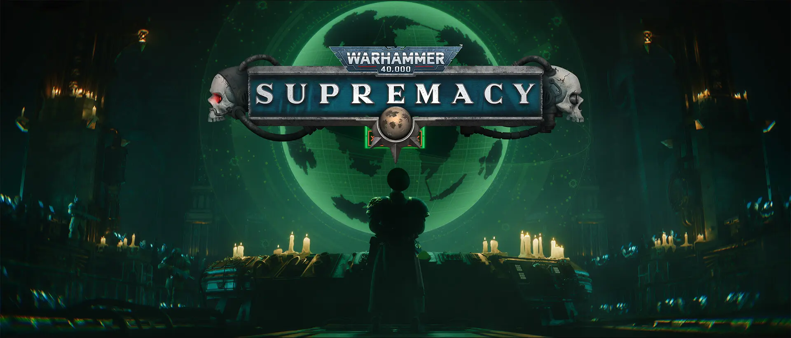

Supremacy: Warhammer 40,000 — Launch Monetization Planning
I worked on the launch offer plan and early purchase journey, including faction-themed bundles, the sales calendar and what to test. The work documented here reached draft and scoping stages.
The challenge
The launch shop needed a clear first and second purchase path. Offers had to fit the Warhammer setting and its factions, work across desktop and mobile, and protect players’ sense of fairness. Earlier work on Supremacy titles informed the plan.
Design proposal
The draft journey started with a timed Starter Pack, followed by a faction-themed offer and a place to discover the subscription. This gave each step a distinct purpose: introduce the shop, make the follow-up relevant to the player’s faction and make recurring value clear. The calendar placed key offers alongside planned game events.
An early offer should be easy to understand while a player is still learning the game. The test plan covered price points and bundle composition so those decisions could be evaluated before expanding the offer ladder.
My contribution and planning outputs
I worked on monetization strategy, early offer design and test planning with Product, Data and Game Design. My scope also included coordination on how offers fit the setting and the requirements for tracking player decisions.
- Drafted: launch offer tiers and the first and second purchase journey.
- Mapped: sales calendar beats to production milestones.
- Scoped: the A/B testing framework and the analytics requirements for evaluating offers.
Proposed evaluation
I’d start by randomly assigning eligible players to one of two bundles when they first see the offer. I’d keep price and timing consistent and compare the share of exposed players who made a first purchase within a fixed window. I’d check repeat purchases and early retention before deciding whether to roll out a variant, and test price separately.
Before running that comparison, I’d verify that tracking could connect offer exposure, eligibility and purchase events. That would make it possible to tell whether a weak result came from the offer itself or from who actually saw it.

The wider project also involved New Moon Productions.